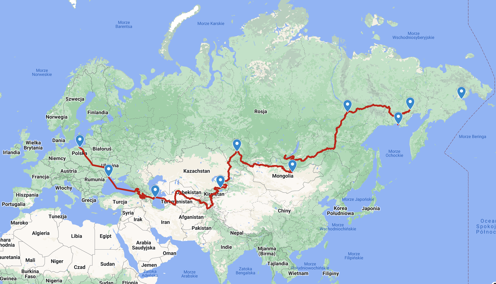

packrafting iceland
motoafryka motomongolia motogruzja motokarpaty motosyberia moto enduro travel motorcycle movie motorcycle DVD siberia africa
russia mongolia Yamaha TT600R TT 600 R XT XT600 KTM LC4 KTM 640 Adventure Suzuki DR400Z DRZ 400 BMW GS Adventure
Russia Mongolia Poland Ukraine Romania Turkey Sudan Egypt Kenia Ethiopia Uganda Tanzania Mozambik Zambia Namibia South Africa
Russia Gruzja Georgia Azerbejd?an Azerbeijan Armenia Turkmenistan Uzbekistan Kirgizja Kirgistan Tad?ykistan Tajikistan Kazachstan Kazakhstan Mongolia Russia Magadan Anadyr
enduro offroad off-road mondo enduro mondoenduro terra circa terracirca long way round long way down longwayround longwaydown
Satan watching MotoSyberia 2.0 Reactivation!

Go to maps.google.com
MotoSyberia 2007, Poland-Magadan

Go to maps.google.com
Trip report:
Distance: >23.000 km
Duration: 91 days
Countries: Poland, Ukraine, Georgia, Armenia, Azerbeijan, Turkmenistan, Uzbekistan, Tajikistan, Kirgistan, Kazachstan, Russia, Mongolia, Russia-Irkutsk, Russia-Yakutsk, Russia-Magadan, Russia-Omsukchan, Magadan-Moscow by plane, Moscow-Poland on bike.
Go to maps.google.com